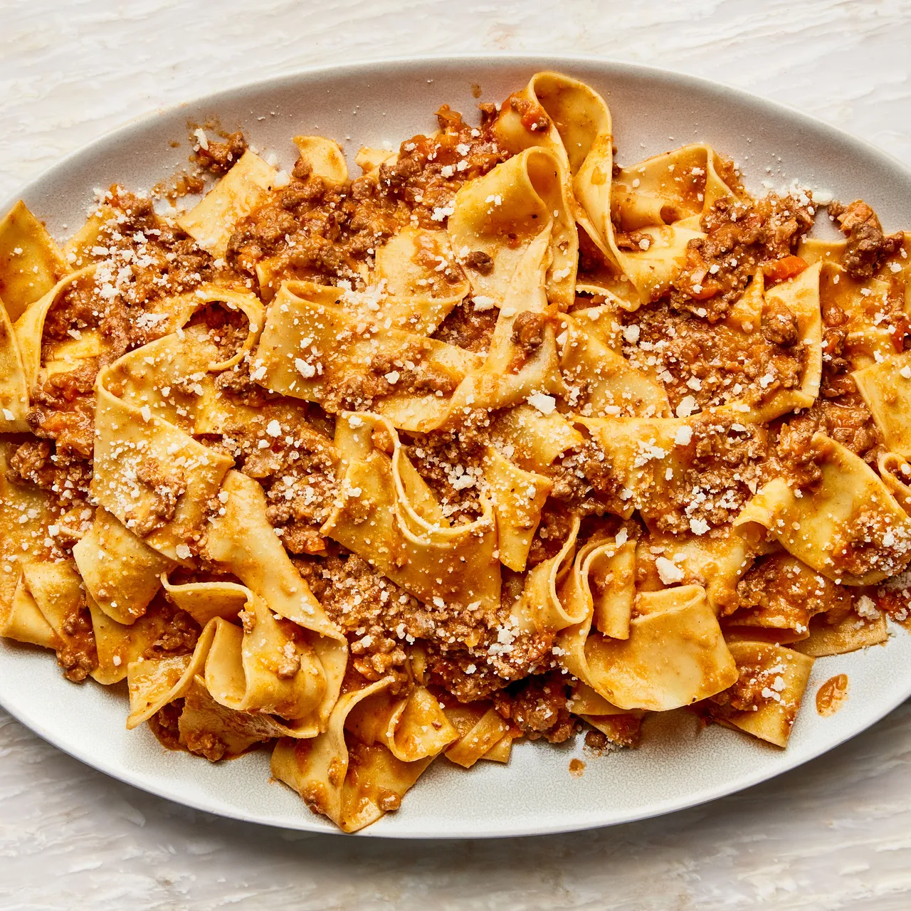

Bolognese

A bolognese is a tradition meat sauce from northern Italy. It differs from the sauces in souther Italy in that it does not use tomatoes or dried pasta.
Ingredients
- 4 tbsp butter
- 1 cup minced onion
- 1 cup minced carrot
- 1 cup minced celery
- 2 lbs minced meat (your choice - I go with equal parts ground pork and beef)
- 1 oz dried porcini
- 6 oz tomatoe past
- 1 cup stock
- 1 cup red wine
- 1 cup milk
- 1/2 nutmeg grated (1/2 tsp)
- salt and pepper
- pasta (preferrably homemade)
- cheese for garnis
Steps
- Rehydrate porcini per package instructions.
- Heat butter in large dutch oven. Add sofrito (minced onion, carrot and celery) and cook 5 - 8 minutes until sofrito is sweating but not browned.
- Add chopped porcini and tomatoe paste. Cook 3-4 minutes until paste turns the color of brick.
- Add meat and lightly brown.
- Add red wine. Simmer until mostly evaporated.
- Add stock and milk. Simmer over low heat covered until desired consistency. Most likely 2 - 3 hours. Optionally add a bay leaf during this step.